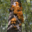

I've been having fun with AI / ML since I was 14 using Racket and Octave reading “How to Design Programs” (the blue book). Implemented the Gradient Descent and PID control for a project model self-driving car and got a small taste of Greg Hendershotts's “Fear of Macros”, although I didn't get very far. At the time I was super excited about self-driving cars and comma.ai (George Hotz goat) had just come out with their first kit. I ended up saving up to buy the Honda Civic model that was most compatible with the technology, but never ended up modding the car. It's still currently the car I have and I'll going to do the mods after I get a job and can afford it.
After highschool I took a gap year and did a random SWE internship at a local medical supplies company through a family friend. Kinda wasn't into it (was mostly optimizing product auditing process/automating email reports, which was kinda boring to me at the time) Went back to university, at WashU in St. Louis and did Biomedical Engineering because I loved Physics, Biology and it just sounded interesting (hard) when I went to the seminar. I took like, 20 creds that semester. I did well, but I found myself enjoying my mandatory intro CS class more (and also I LOVED my chem class b/c we covered quantum mechanics). I was still doing random CS projects for fun on the side, so I just fully committed at that point. My goal at that point was to do a double major in CS + minor in Physics. Was on track, enjoying tackling insanely hard course loads (avg 19 creds of weed out classes) because I had to try my absolute hardest every single day.
Then Covid hit. Stopped eating, super lonely. Couldn't focus in online classes. Took a medical leave of absence to figure out what I wanted to do. With no plan, I ended up driving with all my belongings to Connecticut to meet someone I met online. Horribly reckless decision in retrospect. At least I still have both my kidneys, at least I wasn't lonely anymore.
I felt terrible, but needed something to do. I applied to transfer to UConn for CS and got in. Based on what everyone around me said I thought I'd hate it, but UConn saved me from my post-Covid rut. Specifically, Computer Architecture (CSE 3666) saved me. That class single handedly got me out of the pit Covid threw me in, and doubled my passion for CS. I don't even like computer architecture, it was just a hard fucking class.
To me, the common rule/theme in my life is this: If I'm challenged, I'll usually succeed. But if I take the easy route, I'll ALWAYS fail. When something I do doesn't turn out the way I want, almost 100% of the time (so far), it's because I forgot my one rule.
If you read that shit above, thanks! I appreciate that you took the time to do that, genuinely, thank you so much. I know for a fact that I'm immature and still growing as a person, I hope you'll forgive my mistakes and point out areas where I can improve. (nicely, please)
- Robin :D
shout out my parents and sister, shout out quincy, shout out morgan
